I deployed an Ubuntu VM with a public IP into SUBNET1, tried to SSH in, and the connection timed out. This post explains why, then walks through creating an NSG, attaching it to the subnet and adding an SSH rule. Along the way it covers how NSG rules are evaluated, the default rules, service tags, application security groups and how to troubleshoot.
The setup was simple: VM vnet1srv01 (Ubuntu 26.04 LTS) in VNET-SP1 / SUBNET1 with private IP 10.0.0.4 and a public IP. The VM's Network settings page showed Network security group: – and Effective security rules: 0. With no NSG anywhere, you might expect everything to be open. Instead, SSH to the public IP on port 22 failed with "connection timed out".
The reason: the VM's public IP uses the Standard SKU, and Standard public IPs are secure by default. Inbound traffic is blocked unless a network security group explicitly allows it. With no NSG there was nothing to allow port 22, so packets were silently dropped. A timeout (rather than "connection refused") is the typical sign of traffic being dropped by a filter before it reaches the VM.
Two things that are easy to mix up. The private subnet setting on SUBNET1 (from the VNet post) controls outbound internet access for VMs without a public IP. It has nothing to do with this problem. Inbound SSH was blocked by the Standard public IP's secure-by-default behaviour, and an NSG is what opens it.
A network security group (NSG) is Azure's built-in, distributed firewall for traffic in and out of a virtual network. It is a list of allow and deny rules that Azure enforces at the network interface of each VM, so there is no appliance to size, patch or pay for. NSGs are free.
nsg1 in Network-RG, West US 3). It can only be attached to subnets and NICs in the same region.Coming from OCI? An Azure NSG combines what OCI splits into security lists (attached to a subnet) and network security groups (attached to VNICs). Like OCI rules, Azure rules are stateful by default; unlike OCI, Azure rules have a priority and can explicitly deny.
This is the rule from the lab, with every field explained:
| Field | Lab value | What it means |
|---|---|---|
| Priority | 100 | 100 to 4096. Lower numbers are checked first. Must be unique per direction within the NSG. |
| Name | ssh | Unique within the NSG. Name rules by purpose, for example allow-ssh-from-home. |
| Source | Any | Any, an IP or CIDR range, "My IP address", a service tag or an application security group. |
| Source port ranges | * | Almost always *: clients pick a random source port. |
| Destination | Any | Any, IP/CIDR, service tag or ASG. "Any" here means any address the NSG protects. |
| Service / destination port | Custom, 22 | A single port, a range (8000-8100) or a list (80,443). Presets like SSH, RDP, HTTPS fill this in. |
| Protocol | Any | TCP, UDP, ICMPv4, ICMPv6 or Any. SSH only needs TCP, so TCP would be tighter. |
| Action | Allow | Allow or Deny. |
The portal showed a warning triangle next to the ssh rule. That's Azure flagging that port 22 is open to the whole internet. Bots scan every Azure public IP for SSH and RDP within minutes, so section 10 tightens this rule.
A new NSG isn't empty. It has six default rules at priorities 65000 and above. You can't delete them, but you can override them with your own rules at lower numbers. This is exactly what nsg1 showed straight after creation:
| Dir. | Priority | Name | Source → Destination | Action |
|---|---|---|---|---|
| In | 65000 | AllowVnetInBound | VirtualNetwork → VirtualNetwork | Allow |
| In | 65001 | AllowAzureLoadBalancerInBound | AzureLoadBalancer → Any | Allow |
| In | 65500 | DenyAllInBound | Any → Any | Deny |
| Out | 65000 | AllowVnetOutBound | VirtualNetwork → VirtualNetwork | Allow |
| Out | 65001 | AllowInternetOutBound | Any → Internet | Allow |
| Out | 65500 | DenyAllOutBound | Any → Any | Deny |
In plain words: inside the VNet, everything can talk to everything; Azure load balancer health probes are allowed in; nothing from the internet gets in; and outbound to the internet is allowed. The VirtualNetwork tag covers the VNet's address space plus peered VNets and connected on-premises ranges.
So attaching nsg1 with only the defaults would still have blocked SSH, because DenyAllInBound would catch it. The custom rule at priority 100 is what let it through.
For each new connection, Azure checks the rules for that direction in priority order, lowest number first. The first rule that matches decides the result and evaluation stops. Rules with higher numbers are never looked at.
A common mistake is a broad Deny at a low number above a narrow Allow at a higher number. For example, Deny Any at 100 and Allow 443 at 200 blocks HTTPS, because rule 100 matches first.
You can attach NSGs at two levels, and when both exist, traffic must be allowed by both:
nsg1 on SUBNET1.Service tags are Microsoft-maintained names for groups of IP ranges, so you never hard-code Azure addresses. Useful ones:
| Tag | Covers |
|---|---|
VirtualNetwork | Your VNet, peered VNets and connected on-premises ranges |
Internet | Public IP space outside Azure's VNets |
AzureLoadBalancer | The source of load balancer health probes (168.63.129.16) |
Storage, Sql, AzureMonitor | Azure service endpoints; regional variants like Storage.WestUS3 exist |
AzureCloud | All Azure public IP ranges |
Application security groups (ASGs) let you write rules by role instead of by IP. Put the web servers' NICs in asg-web and the database NICs in asg-db, then write one rule: allow asg-web → asg-db on 1521. When you add a new web server, you only add its NIC to asg-web; the rule doesn't change.
Starting point: VNET-SP1 with private subnet SUBNET1 (from the VNet post), and an Ubuntu VM vnet1srv01 in that subnet with a Standard public IP and no NSG. Goal: create nsg1, attach it to SUBNET1, allow SSH, and log in. NSGs are free.
Open VNET-SP1 → Subnets → SUBNET1. The address prefix is now greyed out with "cannot be updated because the subnet is in use", since the VM's NIC lives here. Private subnet is enabled, and Network security group is None.
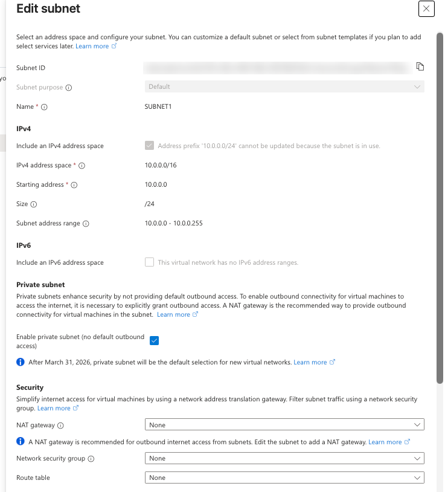
Open the VM → Networking → Network settings. It sits in VNET-SP1 / SUBNET1 with private IP 10.0.0.4 (the first usable address, as the VNet post predicted) and a public IP. Network security group shows –, Effective security rules shows 0, and the page says No port rules to display.
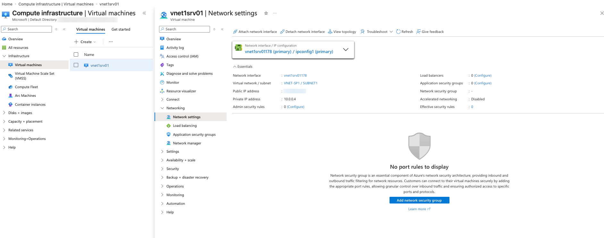
Connect with your SSH client (Termius here) to <public-ip>:22. Address resolution works, then "Connection failed: connection timed out". The Standard public IP drops inbound traffic that no NSG allows (section 1).
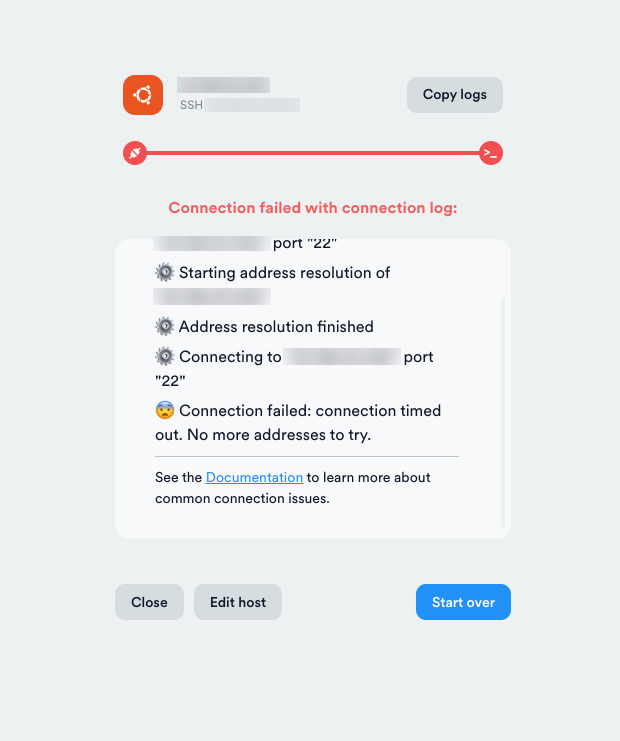
Search Network security groups → + Create. Choose Network-RG, name it nsg1, and pick West US 3, which must match the VNet's region. Then Review + create → Create.
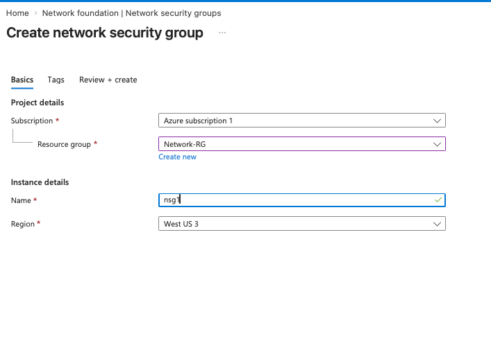
Open nsg1. Custom security rules: 0 inbound, 0 outbound and Associated with: 0 subnets, 0 network interfaces. Below are the six default rules from section 4. An NSG that isn't associated with anything does nothing.
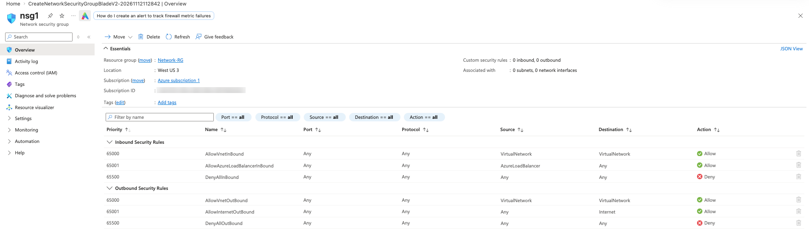
In nsg1 go to Settings → Subnets → + Associate. Choose virtual network VNET-SP1 (Network-RG) and subnet SUBNET1, then click OK. You can do the same from the subnet's edit panel in step 1.
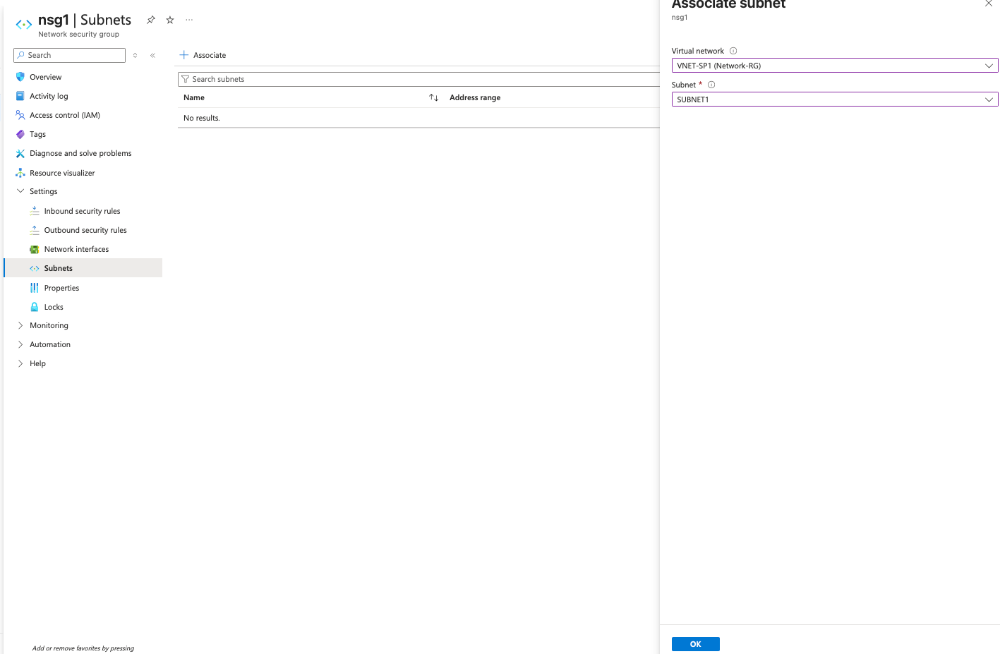
The Subnets list now shows SUBNET1 · 10.0.0.0/24 · VNET-SP1.
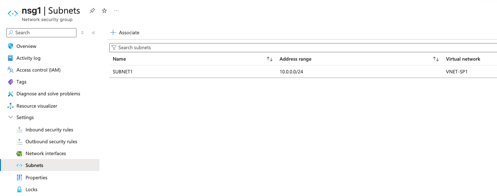
Back on the VM's Network settings, a new panel reads Network security group nsg1 (attached to subnet: SUBNET1) · Impacts 1 subnets, 0 network interfaces, with the three inbound default rules. SSH would still fail now, because DenyAllInBound (65500) catches port 22.
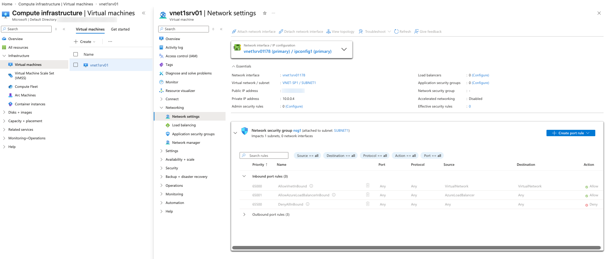
Click Create port rule → Inbound port rule. Creating it from the VM page adds it to whichever NSG applies, here the subnet's nsg1.
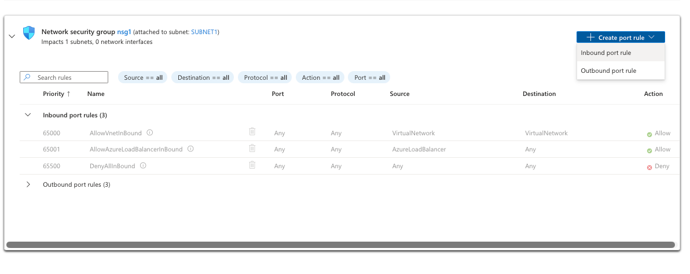
Fill in Source Any, Source port ranges *, Destination Any, Service Custom, Destination port ranges 22, Protocol Any, Action Allow, Priority 100, Name ssh, then Add. Section 10 shows how to tighten Source and Protocol, which you should do for anything beyond a short lab.
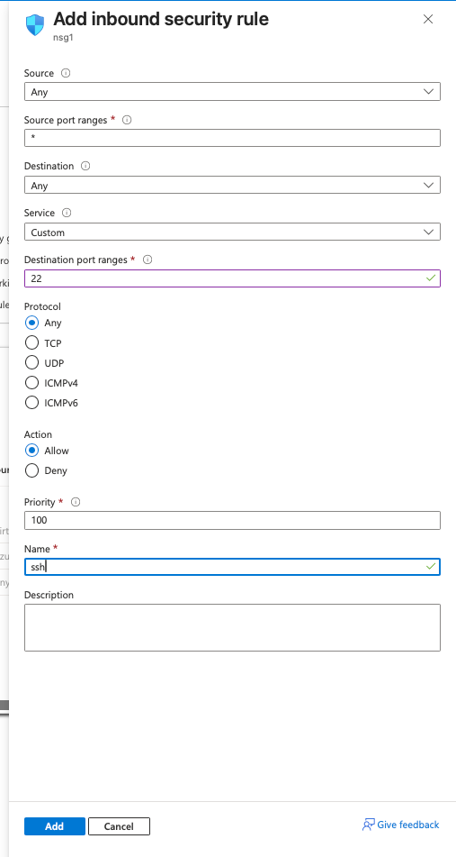
Inbound port rules now show four entries, with 100 ssh 22 Any Any Any Allow on top. Note the warning triangle: Azure flags any rule that opens a management port such as 22 or 3389 to the whole internet.
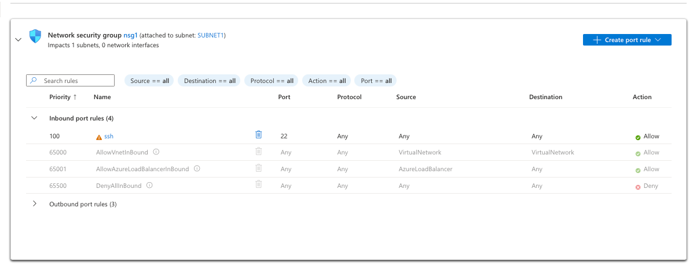
Retry the connection. The Ubuntu 26.04.1 LTS welcome banner appears. hostname -f returns vnet1srv01.<unique-id>.phxx.internal.cloudapp.net, the VM's name in Azure's internal DNS (provided by 168.63.129.16), which other VMs in the VNet can resolve.
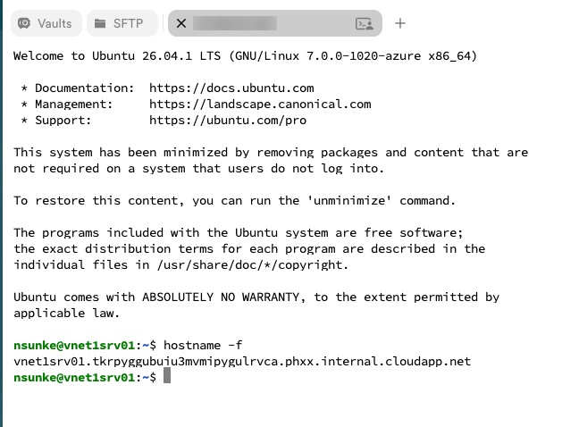
RG=Network-RG
# 1. Create the NSG
az network nsg create -g $RG -n nsg1 -l westus3
# 2. Associate it with SUBNET1
az network vnet subnet update -g $RG --vnet-name VNET-SP1 -n SUBNET1 \
--network-security-group nsg1
# 3. Allow SSH, but only from your own public IP and only over TCP
MYIP=$(curl -s https://ifconfig.me)
az network nsg rule create -g $RG --nsg-name nsg1 -n allow-ssh-from-home \
--priority 100 --direction Inbound --access Allow \
--protocol Tcp --source-address-prefixes $MYIP/32 \
--source-port-ranges '*' --destination-port-ranges 22
# 4. List the rules, including the defaults
az network nsg rule list -g $RG --nsg-name nsg1 --include-default \
--query "[].{prio:priority, name:name, dir:direction, port:destinationPortRange, src:sourceAddressPrefix, access:access}" -o table
# 5. Effective rules on the VM's NIC (the VM must be running)
NIC=$(az vm show -g $RG -n vnet1srv01 --query "networkProfile.networkInterfaces[0].id" -o tsv)
az network nic list-effective-nsg --ids $NIC -o tableIf you run this in Cloud Shell, ifconfig.me returns Cloud Shell's IP, not your laptop's. Run step 3 from your own terminal, or look up your IP in a browser and paste it in.
The lab rule opens SSH to the entire internet. That's fine for a few minutes of testing, but do one of these before you leave the VM running:
Edit the ssh rule: set Source to My IP address (the portal fills it in) and Protocol to TCP. The warning triangle disappears. If your home IP changes, update the rule.
az network nsg rule update -g Network-RG --nsg-name nsg1 -n ssh \
--source-address-prefixes <your-ip>/32 --protocol Tcp10.0.0.4 directly.When you're done with the lab, either delete the ssh rule or stop (deallocate) the VM so it isn't sitting on the internet with port 22 open.
| Tool | Where | What it tells you |
|---|---|---|
| Effective security rules | VM → Network settings, or NIC → Effective security rules | The combined result of subnet and NIC NSGs for that NIC |
| IP flow verify | Network Watcher | Whether a given packet (IP, port, protocol, direction) is allowed or denied, and by which rule |
| Connection troubleshoot | VM → Troubleshoot, or Network Watcher | Tests an actual connection end to end and reports where it fails |
| VNet flow logs | Network Watcher | Logs every allowed and denied flow to a storage account. Microsoft is retiring the older NSG flow logs in favour of VNet flow logs, so use those for new setups. |
Quick checklist when a port won't open:
sudo ss -tlnp) and is the OS firewall (ufw, firewalld, Windows Firewall) open?Pick an answer to see whether it's right and why.
Next in the series: Azure Bastion, so we can remove the public IP and the SSH rule altogether.